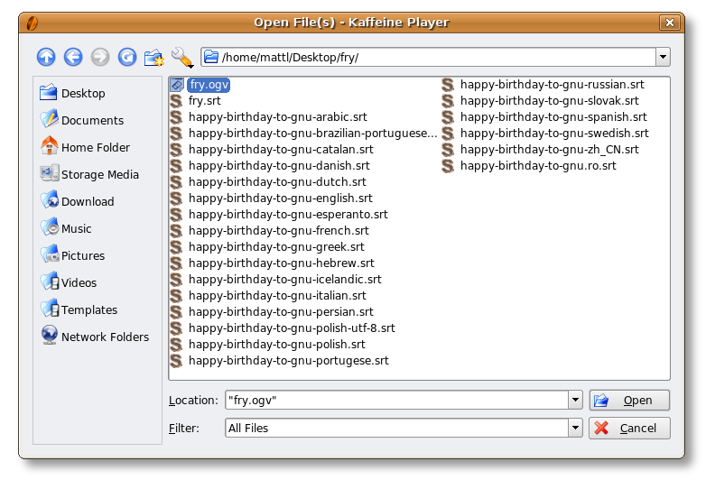

Zum Software Freedom Day haben wir diese kleine Anleitung erstellt, wie man den Film „Alles Gute zum Geburtstag GNU“ (mit Stephen Fry) mit Untertiteln in Ihrer Landessprache abspielt.
Es ist ziemlich einfach, also lassen Sie uns loslegen! Dieses Anleitung setzt Kaffeine voraus, wenn Sie Totem, Xine, Mplayer oder VLC, haben wir haben auch Hilfe für Sie.
Alle Anweisungen gelten für GNU/Linux-Systeme, wenn Sie also Windows oder Mac OS X verwenden, können Sie diese auch nutzen, aber wir wissen es nicht.
Sobald beide Dateien heruntergeladen sind, stellen Sie sicher, dass sie im selben Ordner sind und die Dateinamen übereinstimmen.
Zum Beispiel können der Film in fry.ogv und der Untertitel in fry.srt umbenannt werden.
Nun öffnen Sie den Film einfach in Kaffeine. Die Untertitel sollten eingeblendet werden.
Klicken Sie auf „OK“, und der Film wird wiedergegeben…
